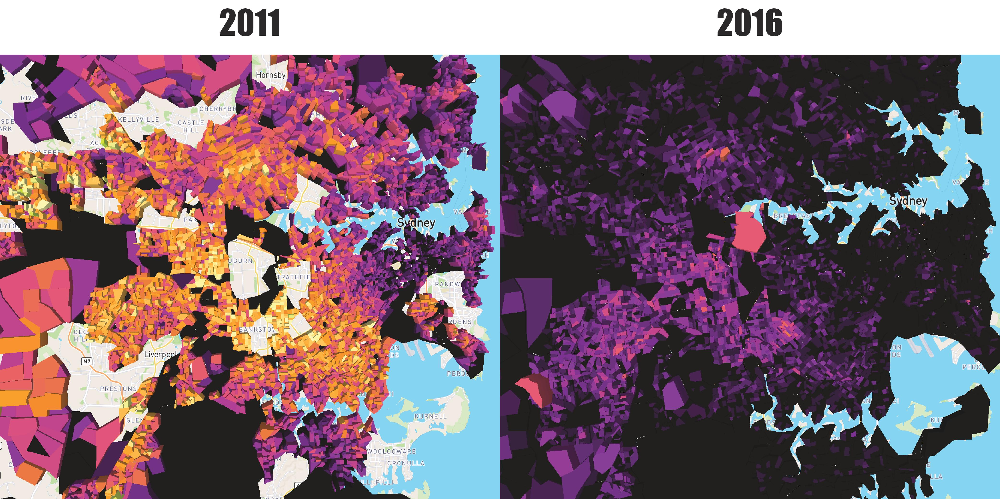
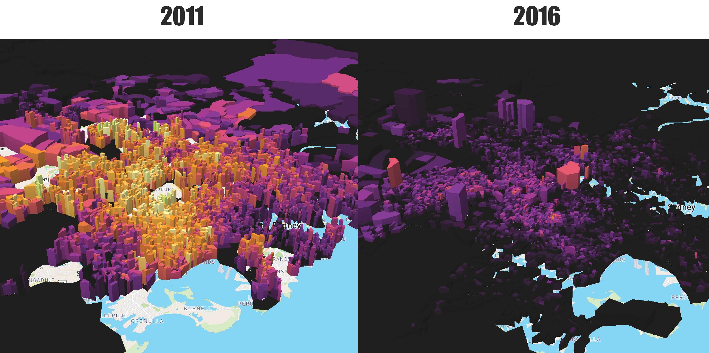
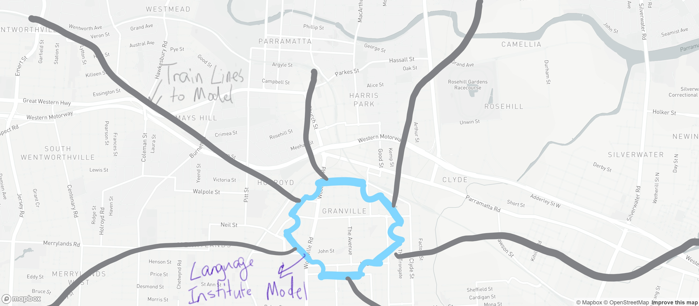
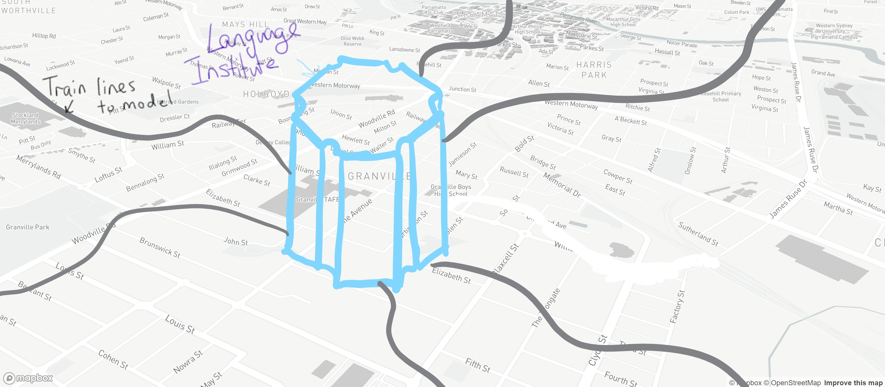

Data Explanation
Based off the data displayed in Assignment 2. The dataset "Total dependent children where the female parent Speaks other language and speaks English Very well or well and the male parent Speaks other language and speaks English Very well or well" shows the statistics between those whose parents speak more that one language. The first image below visually communicates the color difference of this dataset, where the brighter the color the more dependent children whose parents speak english and another language and the less when certain areas of NSW is darker. Viewing upon how the dataset has altered between the 2011 Census and the 2016 Census, there is a drastic change to the amount of dependent children whose parents speak more than one language. After a 5 year gap the majority of dependent children's parents speak only English or one other language.
Another dataset visually displayed "Total Income of Couple family with children" shows the statistics between families where coupled parents with children who have a high or low total income. The second image below demonstrates the differences of total incomes between the two year census', where the 2011 Census shows the exponential increase in total incomes amongst families whose coupled parents with children have but has radically changed 5 years later where the majority of coupled parents with children have a much lower total income difference.
The Color Difference displays how the Total of Dependent Children where both Parents speak the English Language Very Well and Another Language
Ariel View

The Height Difference of the Total Income of Coupled family with children
Angled View

Problem/Solution Description
Due to the 'Drastic' changes between the two datasets in the 2011 Census and the 2016 Census the problem that arises is the fact that 'Dependent Children whose Parents' who know only one language or just the English language tend to have a decreasing total income over time. This is proven through the visual datasets from the above images over the past 5 years between 2011 and 2016. Therefore, a suitable solution to this dire problem is to create an institute where people around NSW can visit and learn new languages for their own benefits. It is stereotypically known that those who can speak more than one language will have more opportunities in terms of jobs, meaning that they can achieve higher income than most who can only speak one language or the English language only.
The Model created in the Map section is a hexagonal prism thats corners are cut by radical circles where it is split to the center creating Six triangular prism fit for each to teach one language.
The Top 6 Languages used around the world are:
1. Mandarin Chinese
2. English
3. Hindustani
4. Spanish
5. Arabic
6. Malay
Basic Sketches to visually display the Solution to the Problem
Sketch#1

Sketch#2

Link to Model on Mapbox